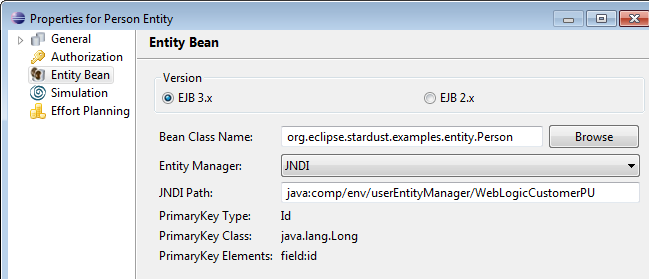
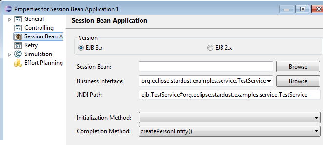
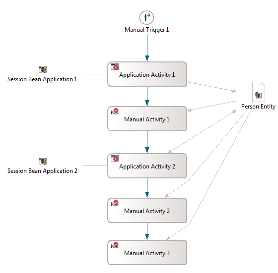

This chapter demonstrates how to use the EJB3 Entity Data type. Perform the following steps to prepare and use an Entity Data type in Stardust:
For general details on using Entity Bean data and Session Bean applications refer to chapters Using Entity Bean Data and Session Bean Applications accordingly.
You can download the example model and source files used for this example from here: entity-data.zip
To prepare the database do the following:
Start by creating the table and sequences via the following command:
CREATE TABLE PERSON (ID NUMBER(10) NOT NULL, NAME VARCHAR2(255) NULL, VORNAME VARCHAR2(255) NULL, PRIMARY KEY (ID)); create sequence person_seq START WITH 1 INCREMENT BY 50;
Note that you can also generate them via JPA.
Create a data source under the JNDI name jdbc/sample-db. Make sure that it is an XA data source.
Create the following entity bean class. You can also find this class in the example sources zip file, which you can download from the link mentioned above.
package org.eclipse.stardust.examples.entity;
import javax.persistence.Entity;
import javax.persistence.Id;
import javax.persistence.GeneratedValue;
import javax.persistence.SequenceGenerator;
import javax.persistence.GenerationType;
@Entity
@SequenceGenerator(name="person_seq", initialValue=1, allocationSize=50)
public class Person {
@GeneratedValue(strategy=GenerationType.SEQUENCE, generator="person_seq")
@Id
private Long id;
private String name;
private String vorname;
public Long getId() {
return id;
}
public void setId(Long id) {
this.id = id;
}
public String getName() {
return name;
}
public void setName(String name) {
this.name = name;
}
public String getVorname() {
return vorname;
}
public void setVorname(String vorname) {
this.vorname = vorname;
}
public String toString() {
StringBuilder sb = new StringBuilder();
sb.append(">>> Person id: ").append(id).append(" | vorname: ").append(vorname);
sb.append(" | name: ").append(name).append(" | hashCode: ").append(hashCode());
return sb.toString();
}
}
Create the following persistence.xml in the
<?xml version="1.0" encoding="UTF-8"?> <persistence version="1.0" xmlns="http://java.sun.com/xml/ns/persistence" xmlns:xsi="http://www.w3.org/2001/XMLSchema-instance" xsi:schemaLocation="http://java.sun.com/xml/ns/persistence http://java.sun.com/xml/ns/persistence/persistence_2_0.xsd"> <persistence-unit name="WebLogicCustomerPU" transaction-type="JTA"> <provider>org.eclipse.persistence.jpa.PersistenceProvider</provider> <jta-data-source>jdbc/sample-db</jta-data-source> <shared-cache-mode>DISABLE_SELECTIVE</shared-cache-mode> <exclude-unlisted-classes>false</exclude-unlisted-classes> <properties> <!-- Deactivate Cache for the moment. Configure to your needs --> <property name="eclipselink.cache.shared.default" value="false" /> <property name="eclipselink.cache.size.default" value="0" /> <property name="eclipselink.cache.type.default" value="None" /> </properties> </persistence-unit> </persistence>
Add to every @prodcutnameshort@ bean in the deployment descriptor (ejb-jar.xml) the following fragment to publish the entity manager name:
<session>
<ejb-name>WorkflowService</ejb-name>
...
<persistence-context-ref><!-- java:comp/env/userEntityManager/WebLogicCustomerPU -->
<persistence-context-ref-name>userEntityManager/WebLogicCustomerPU</persistence-context-ref-name>
<persistence-unit-name>WebLogicCustomerPU</persistence-unit-name>
</persistence-context-ref>
</session>
Create the backing bean to be used in the Session Bean application. You can also find these classes in the example sources zip file, which you can download from the link mentioned above.
package org.eclipse.stardust.examples.service;
import org.eclipse.stardust.examples.entity.*;
public interface TestService {
public Person createPersonEntity();
public Person changePerson(Person p);
}
package org.eclipse.stardust.examples.service;
import javax.ejb.Remote;
import javax.ejb.Stateful;
import org.eclipse.stardust.examples.entity.Person;
@Remote(TestService.class)
@Stateful(mappedName = "ejb/TestService")
public class TestServiceBean implements TestService {
@Override
public Person createPersonEntity() {
Person p = new Person();
p.setVorname("Bart");
p.setName("Simpson");
return p;
}
@Override
public Person changePerson(Person p) {
System.out.println("Original: " + p);
p.setVorname("Changed-Bart");
p.setName("Changed-Simpson");
System.out.println("Changed: " + p);
return p;
}
}
Create a model with an entity data and session bean applications as described in the following sections or import the model provided in the example zip file if downloaded from the link mentioned above.
Create an entity data with the following settings:

Figure: Entity Data settings
Create two session bean applications with the following settings:

Figure: Session Bean Application settings
Now create appropriate workflow as for example in the following screenshot:

Figure: Example Model Workflow